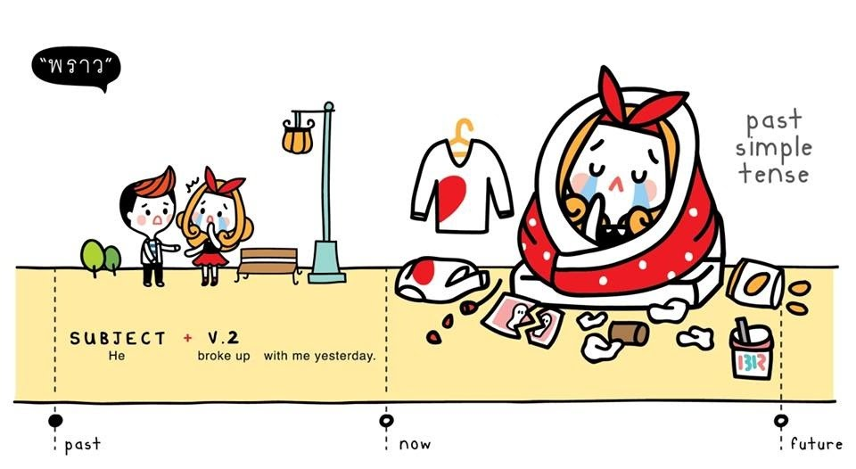

The Past Simple

Image Source: ©พราว
When to use it
We use the past simple tense when an action or situation happens and finishes in the past. We usually say or know when the past action happened.
Example
- She called me at the office yesterday.
- Steve went to the US three times last year.
- Usain Bolt won the 100 meters in the 2012 Olympics.
Please note that the underlined words "called", "went", and "won" are regular and irregular verbs in past form
How to make positive past simple sentences
The past tense is made from subject + verb-ed. Irregular verbs have a different past form.
Example
- I finished university in 2010 and I started a job in a bank. Then I left that job and went to live in Japan.
- He arrived from the airport at 8:00, checked into the hotel at 9:00, and met the others at 10:00.
Regular Verb Conjugation
| Base Form |
Past Tense |
Past Participle |
| clean |
cleaned |
cleaned |
| try |
tried |
tried |
| work |
worked |
worked |
Irregular Verb Conjugation
| Base Form |
Past Tense |
Past Participle |
| come |
came |
come |
| give |
gave |
given |
| think |
thought |
thought |
Content Source: © BBC Learning English